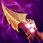
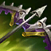

Puedes previsualizar tu build arrastrando los objetos hacia la
derecha
Máscara abisal
____________________
350 de vida 60 de resistencia
mágica Deshacer: Inmovilizar a un campeón hace que reciba un 10%
más de daño durante 4 s.
Abrazo demoníaco
____________________
70 de poder de habilidad
350 de vida
Mirada de azakana: Dañar con habilidades a un enemigo le inflige un 1.2% de su vida máxima como daño mágico por quemadura cada segundo durante 4 s. Obtienes 10 de armadura y resistencia mágica si afecta a un campeón (+2.5 de armadura y resistencia mágica por cada campeón afectado).
Ángel de la guarda
____________________
40 de daño de ataque
40 de armadura
Gracia salvadora: Al sufrir daño letal, restaura un 50% de la vida básica y un 30% del maná máximo tras 4 s de estasis (300 s de enfriamiento).
Bastón de aguas fluidas
____________________
50 de poder de habilidad
10% de poder de curaciones y escudos.
100% de regeneración de maná básica
Rápidos: Al curar u otorgar un escudo a un aliado, ambos obtenéis un 20 - 40 de poder de habilidad y 20 de velocidad de habilidades durante 4 s.
El efecto progresa según el nivel del aliado.
Arcoescudo inmortal
____________________
55 de daño de ataque
20% de velocidad de ataque
20% de probabilidad de impacto crítico
10% de robo de vida
Salvavidas: Cuando recibas daño que te haga bajar del 30% de vida, obtienes un escudo de 250 - 700 durante 3 s. Además, obtienes 15-35 de daño de ataque durante 8 s (90 s ).
Pasiva mítica: Se otorga a todos los demás objetos legendarios 5 de daño de ataque y 50 de vida.
Bailarín espectral
____________________
20 de daño de ataque
25% de velocidad de ataque
20% de probabilidad de impacto crítico
7% de velocidad de movimiento
Vals espectral: Los ataques otorgan forma fantasmal y un 7 % de velocidad de movimiento durante 3 s. Además, después de realizar 4 ataques, Vals espectral también otorga un 30 % de velocidad de ataque la misma cantidad de tiempo.
Las unidades con Fantasmal ignoran la colisión con otras unidades.
Baile de la muerte
____________________
55 de daño de ataque
45 de armadura
15 de velocidad de habilidades
Ignora el dolor: 35% (15% para campeones a distancia) del daño físico que recibas te afecta a lo largo de 3 s.
Reto: Los asesinatos y asistencias de campeones eliminan la reserva de daño restante de Ignora el dolor, te otorgan un 30% de velocidad de movimiento durante 2 s y restauran el 10% de la vida máxima mientras dura el efecto.
Grebas de berserker
____________________
35% de velocidad de ataque
45 de velocidad de movimiento
Cañón de fuego rápido
____________________
35% de velocidad de ataque
20% de probabilidad de impacto crítico
7% de velocidad de movimiento
Vigor: Moverse y atacar generará un ataque con vigor.
Francotirador: Tus ataques con vigor infligen 120 de daño mágico adicional. Además, los ataques con vigor obtienen hasta un 35% de alcance de ataque adicional.
El alcance de ataque no puede aumentar más de 150 unidades.
Incensario ardiente
____________________
60 de poder de habilidad
10% de poder de curaciones y escudos.
100% de regeneración de maná básica
Santificar: Cuando usas tus curaciones o escudos sobre otros campeones aliados, ambos obtenéis durante 6 s un 10% - 30% (según el nivel del aliado) de velocidad de ataque y 5 - 20 (según el nivel del aliado) de daño mágico al golpear.
El efecto progresa según el nivel del aliado.
Cimitarra mercurial
____________________
40 de daño de ataque
20% de probabilidad de impacto crítico
30 de resistencia mágica
Activa - Mercurio: Elimina todos los efectos de control de adversario (menos los levantamientos en el aire) y otorga un 50% de velocidad de movimiento durante 1 s (90 s de enfriamiento).
Recaudadora
____________________
55 de daño de ataque
20% de probabilidad de impacto crítico
12 de letalidad
Muerte e impuestos: Si infliges daño a un campeón enemigo y lo dejas con menos del 5% de vida, lo ejecutas. Los asesinatos de campeones otorgan 25 de oro adicional.
Coraza del hombre muerto
____________________
300 de vida
40 de armadura
5% de velocidad de movimiento
Naufragio: Mientras te mueves, generas hasta 60 de velocidad de movimiento. Tu siguiente ataque descarga la velocidad de movimiento generada para infligir hasta 100 de daño mágico. Si el atacante es un campeón cuerpo a cuerpo al máximo de velocidad, el ataque también ralentiza al objetivo un 50% durante 1 s.
"Solo hay un modo de que me arrebates esta armadura...". - Nombre olvidado
Corazón de Hielo
____________________
80 de armadura
400 de maná
20 de velocidad de habilidades
Caricia invernal: Reduce un 15% la velocidad de ataque de los enemigos cercanos.
Como una roca: Reduce el daño recibido de ataques hasta en (un 0,5% de la vida máxima) (hasta un máximo del 40% del daño del ataque).
Cosechador nocturno
____________________
90 de poder de habilidad
300 de vida
15 de velocidad de habilidades
Desgarrar alma: Dañar a un campeón le inflige (125 +15% del poder de habilidad) de daño mágico adicional y te otorga un 25% de velocidad de movimiento durante 1.5 s (40 s de enfriamiento por campeón).
Pasiva mítica: Se otorga a todos los demás objetos legendarios 5 de velocidad de habilidades.
Dañar a un nuevo campeón aumenta la duración de la velocidad de movimiento adicional.
Cuchilla negra
____________________
40 de daño de ataque
400 de vida
25 de velocidad de habilidades
Trinchar: Infligir daño físico a un campeón aplica una acumulación de un 4% de reducción de armadura durante 6 s (reducción de armadura máxima del 24%).
Rabia: Infligir daño físico a un campeón otorga 5 de velocidad de movimiento por cada acumulación de Trinchar que tenga durante 2 s.
Recuerdos de Lord Dominik
____________________
30 de daño de ataque
20% de probabilidad de impacto crítico
35% de penetración de armadura
Verdugo de gigantes: Infliges hasta un 15% de daño físico adicional a campeones que tengan más vida máxima que tú.
Mejora máxima con 2000 de vida máxima de diferencia).
Filoscuro de Draktharr
____________________
60 de daño de ataque
18 de letalidad
20 de velocidad de habilidades
Acechador nocturno: Al atacar a un campeón, inflige (65 + 25% del daño de ataque adicional) de daño físico adicional (15 s de enfriamiento). Si el atacante es un campeón cuerpo a cuerpo, el ataque también ralentiza al objetivo un 99% durante 0.25 s. Cuando muere un campeón al que has dañado en los últimos 3 s, se reinicia este enfriamiento y te otorga invisibilidad durante 1.5 s.
Pasiva mítica: Se otorga a todos los demás objetos legendarios 5 de velocidad de habilidades.
Eclipse
____________________
55 de daño de ataque
18 de letalidad
8% de omnisucción
Luna creciente: Golpear a un campeón con 2 ataques o habilidades independientes en 1.5 s o menos inflige un 6% de su vida máxima como daño físico, te otorga un 15% de velocidad de movimiento y un escudo de (150 + 40% del daño de ataque adicional) (100 + 30% del daño de ataque adicional para campeones a distancia) durante 2 s (8 s de enfriamiento, 16 s de enfriamiento para campeones a distancia).
Pasiva mítica: Se otorga a todos los demás objetos legendarios 4% de penetración de armadura
Saqueador de esencia
____________________
45 de daño de ataque
20% de probabilidad de impacto crítico
20 de velocidad de habilidades
Hoja encantada: Tras usar una habilidad, tu siguiente ataque inflige un 100% del daño de ataque básico + un 40% del daño de ataque adicional como daño físico al golpear y restaura un 40% de ese daño como maná (1.5 s de enfriamiento).
Malla de espinas
____________________
350 de vida
60 de armadura
Espinas: Al recibir un ataque, inflige (10 + 10% de la armadura adicional) de daño mágico al atacante y aplica un 40% de Heridas graves durante 3 s si se trata de un campeón. Inmovilizar a campeones enemigos también aplica un 60% de Heridas graves durante 3 s.
Heridas graves reduce los efectos de curación y regeneración.
Escarcha eterna
____________________
80 de poder de habilidad
250 de vida
600 de maná
20 de velocidad de habilidades
Activa - Glaciación: Inflige (100+30% del poder de habilidad) de daño mágico en un cono, lo que ralentiza a los enemigos un 65% durante 1.5 s. Inmoviliza a los enemigos que se encuentren en el centro del cono (30 s de enfriamiento).
Pasiva mítica: Se otorga a todos los demás objetos legendarios 15 de poder de habilidad.
Filo Infinito
____________________
70 de daño de ataque
20% de probabilidad de impacto crítico
Perfección: Si tienes al menos un 60% de probabilidad de impacto crítico, obtienes un 35% de daño de impacto crítico.
Guantelete de fuego escarchado
____________________
350 de vida
25 de armadura
25 de resistencia mágica
20 de velocidad de habilidades
Inmolar: Recibir o infligir daño provoca que comiences a infligir (20 - 40 [según el nivel] + 1% de la vida adicional) de daño mágico por segundo a los enemigos cercanos (aumenta un 25% contra súbditos y un 150% contra monstruos) durante 3 s.
Vínculo de nieve: Los ataques crean un área de escarcha durante 1.5 s (4 s de enfriamiento). Los enemigos que atraviesen la zona quedan ralentizados un 25% (aumenta con tu vida máxima).
Pasiva mítica: Se otorga a todos los demás objetos legendarios 100 de vida y 6% de tamaño.
Hoja de Furia de Guinsoo
____________________
45% de velocidad de ataque
20% de probabilidad de impacto crítico
Ira: Tu probabilidad de impacto crítico se convierte en daño al golpear. Obtienes 40 de daño al golpear por cada 20% de probabilidad de impacto crítico convertida.
Golpe furioso: Cada tercer ataque aplica los efectos de impacto dos veces.
Ira no se beneficia de una probabilidad de impacto crítico superior al 100%. La conversión al daño al golpear de Ira se ve afectada por modificadores de daño crítico.
Guja sombría
____________________
50 de daño de ataque
12 de letalidad
15 de velocidad de habilidades
Apagón: Cuando te detecta un guardián enemigo, se revelan las trampas y se desactivan los guardianes de tu alrededor durante 8 s (45 s de enfriamiento). Tus ataques eliminan las trampas reveladas al instante e infligen el triple de daño a guardianes.
Botas del hechicero
____________________
18 de penetración mágica
45 de velocidad de movimiento
Cintomisil hextech
____________________
90 de poder de habilidad
6 de penetración mágica
250 de vida
15 de velocidad de habilidades
Activa - Hexproyectil: Te deslizas hacia la dirección seleccionada y lanzas proyectiles mágicos en arco que infligen (125 + 15% del poder de habilidad) de daño mágico. Después, obtienes un 30% de velocidad de movimiento al desplazarte hacia campeones enemigos durante 1.5 s (40 s de enfriamiento).
Pasiva mítica: Se otorga a todos los demás objetos legendarios 5 de penetración mágica.
El deslizamiento de Supersónico no puede atravesar obstáculos del terreno.
Impulso cósmico
____________________
75 de poder de habilidad
200 de vida
20 de velocidad de habilidades
Danza de hechizos: Si tienes al menos 160 de poder de habilidad, obtienes 20 de velocidad de habilidades y 10-30 de velocidad de movimiento.
Verdugo de krakens
____________________
65 de daño de ataque
25% de velocidad de ataque
20% de probabilidad de impacto crítico
Abatir: Cada tercer ataque inflige (60 + 45% del daño de ataque adicional) de daño verdadero adicional.
Pasiva mítica: Se otorga a todos los demás objetos legendarios 10% de velocidad de ataque.
Desconsuelo de Liandry
____________________
80 de poder de habilidad
600 de maná
20 de velocidad de habilidades
Agonía: Inflige hasta un 12% de daño mágico adicional a los campeones según la vida adicional del objetivo (máximo: 1250 de vida adicional).
Tormento: Infligir daño con habilidades quema a tus enemigos, lo que inflige (15 + 1.5% del poder de habilidad) + 1% de la vida máxima del objetivo como daño mágico por segundo a lo largo de 4 s.
Pasiva mítica: Se otorga a todos los demás objetos legendarios 5 de velocidad de habilidades.
Botas de lucidez
____________________
20 de velocidad de habilidades
45 de velocidad de movimiento
Otorga 12 de velocidad de hechizos de invocador.
"Este objeto está dedicado a la victoria de Jonia contra Noxus en la revancha por las provincias meridionales del 10 de diciembre del 20 CLE".
Tempestad de Luden
____________________
80 de poder de habilidad
6 de penetración mágica
600 de maná
20 de velocidad de habilidades
Eco: Las habilidades de daño infligen (100 + 10% del poder de habilidad) de daño mágico adicional a tu objetivo y a 3 enemigos cercanos, y te otorgan un 15% de velocidad de movimiento durante 2 s (10 s de enfriamiento). Infligir daño de habilidades a campeones reduce el enfriamiento de este objeto en 0.5 s, hasta 3 s por lanzamiento de hechizo.
Pasiva mítica: Se otorga a todos los demás objetos legendarios 5 de penetración mágica.
Renovación de piedra lunar
____________________
40 de poder de habilidad
200 de vida
20 de velocidad de habilidades
100% de regeneración de maná básica
Gracia estelar: Al afectar a campeones con ataques o habilidades en combate, restaura 70 de vida al aliado cercano más herido (2 s de enfriamiento). Por cada segundo en combate contra campeones, tu poder de curaciones y escudos aumenta un 4% (hasta un máximo de un 20%).
Pasiva mítica: Se otorga a todos los demás objetos legendarios 10 de vida adicional de la curación de Gracia estelar.
Fauces de Malmortius
____________________
50 de daño de ataque
50 de resistencia mágica
15 de velocidad de habilidades
Salvavidas: Al recibir daño mágico que reduzca la vida por debajo del 30%, otorga un escudo que absorbe (200 + 20% de la vida máxima) de daño mágico durante 5 s (60 s de enfriamiento).
Morellonomicón
____________________
80 de poder de habilidad
250 de vida
Aflicción: Infligir daño mágico aplica un 40% de Heridas graves a los campeones enemigos durante 3 s. Si el objetivo está por debajo del 50% de vida, este efecto aumenta a un 60% de Heridas graves.
Heridas graves reduce los efectos de curación y regeneración.
Botas de movilidad
____________________
25 de velocidad de movimiento
Al estar fuera de combate durante al menos 5 s, aumenta el efecto de este objeto a 115.

Diente de Nashor
____________________
100 de poder de habilidad
50% de velocidad de ataque
Mordisco de Icathia: Los ataques aplican (15 + 20% del poder de habilidad) de daño mágico al golpear.
Fuerza de la naturaleza
____________________
350 de vida
60 de resistencia mágica
5% de velocidad de movimiento
Absorber: Al recibir daño de habilidades, otorga 8 de velocidad de movimiento y 4 de resistencia mágica durante 5 s (se acumula hasta 5 veces; una acumulación por cada habilidad única).
Filoveloz de Navori
____________________
60 de daño de ataque
20% de probabilidad de impacto crítico
30 de velocidad de habilidades
Golpes diestros: Cuando tus ataques asesten golpes críticos, se reduce en un 20% el enfriamiento restante de las habilidades que no sean la definitiva.
Filo de la noche
____________________
50 de daño de ataque
10 de letalidad
325 de vida
Anular: Otorga un escudo de hechizos que bloquea la siguiente habilidad enemiga (40 s de enfriamiento).
El enfriamiento del objeto se reinicia si recibes daño antes de que se complete.
Protector pétreo de gárgola
____________________
60 de armadura
60 de resistencia mágica
15 de velocidad de habilidades
Activa - Inquebrantable: Otorga un escudo de (100 + 100% de la vida adicional) que disminuye a lo largo del tiempo y crece en tamaño un 25% durante 2.5 s (90 s de enfriamiento).
Fortificación: Recibir daño de un campeón otorga una acumulación de 5% de armadura adicional y un 5% de resistencia mágica durante 6 s.
5 acumulaciones como máximo; 1 por campeón.
Promesa del caballero
____________________
400 de vida
10 de velocidad de habilidades
300% de regeneración de vida básica
Activa - Juramento: Designa a un aliado que sea digno (60 s de enfriamiento).
Sacrificio: Mientras tu aliado digno se encuentre cerca, se redirige el 15% del daño que reciba hacia ti. Además, si tiene menos del 50% de vida, obtienes un 35% de velocidad de movimiento al desplazarte hacia él.
Los campeones solo pueden estar vinculados por una Promesa de caballero a la vez. La redirección de daño se detiene si tienes menos del 30% de vida.
Sombrero mortal de Rabadon
____________________
120 de poder de habilidad
Obra mágica: Aumenta tu poder de habilidad total un 35%.
Presagio de Randuin
____________________
250 de vida
80 de armadura
10 de velocidad de habilidades
Activa: Humildad: Ralentiza brevemente a los enemigos cercanos, reduce su daño de ataque un 10% y el daño crítico un 20% durante 4 s (60 s de enfriamiento).
Como una roca: Reduce el daño recibido de ataques hasta en (un 0,5% de la vida máxima), hasta un máximo del 40% del daño del ataque.
Botas de rapidez
____________________
60 de velocidad de movimiento
La fuerza de los efectos de ralentización de movimiento se reduce un 25%.

Recordatorio letal
____________________
25 de daño de ataque
25% de velocidad de ataque
20% de probabilidad de impacto crítico
7% de velocidad de movimiento
Sepsis: Infligir daño físico aplica un 40% de Heridas graves a los campeones enemigos durante 3 s. Atacar 3 veces seguidas a un campeón enemigo mejora este efecto a un 60% de Heridas graves contra dicho enemigo hasta que el efecto acaba.
Heridas graves reduce los efectos de curación y regeneración.
Redención
____________________
20% de poder de curaciones y escudos.
200 de vida
15 de velocidad de habilidades
100% de regeneración de maná básica
Activa - Intervención: Selecciona como objetivo un área dentro de un alcance de 5500. Después de 2,5 s, invoca un rayo de luz que restaura 180 - 360 (progresa con el nivel de los aliados) de vida a los aliados y quema a los campeones enemigos un 10% de su vida máxima como daño verdadero (120 s de enfriamiento).
El objeto se puede usar estando muerto. El daño y la curación se reducen un 50% si el objetivo ha recibido hace poco el efecto de otra Intervención. El efecto progresa según el nivel del aliado.
Rostro espiritual
____________________
450 de vida
40 de resistencia mágica
10 de velocidad de habilidades
100% de regeneración de vida básica
Vitalidad ilimitada: Aumenta la eficacia de toda la curación y los escudos que recibes un 25%.
Huracán de Runaan
____________________
45% de velocidad de ataque
20% de probabilidad de impacto crítico
7% de velocidad de movimiento
Furia de viento: Al usar ataques básicos, se disparan proyectiles a un máximo de 2 enemigos cercanos al objetivo y cada uno inflige (40% del daño de ataque) de daño físico. Los proyectiles aplican efectos de impacto y pueden infligir impactos críticos.
El objeto es solo para campeones a distancia.
Cetro de cristal de Rylai
____________________
90 de poder de habilidad
350 de vida
Escarcha helada: Las habilidades de daño ralentizan a los enemigos un 30% durante 1 s.
Sanguinaria
____________________
55 de daño de ataque
20% de probabilidad de impacto crítico
20% de robo de vida
Escudo de icor: Robar vida con ataques puede curarte por encima de tu vida máxima. La vida adicional se acumula como un escudo de 50 - 350 (según el nivel), que va decreciendo lentamente si no has infligido o recibido daño en los últimos 25 s.
Abrazo del serafín
____________________
65 de poder de habilidad
860 de maná
Asombro: Otorga poder de habilidad adicional igual al 5% del maná adicional.
Empíreo: Aumenta tu maná máximo un 5% + un 2.5% por cada 100 de PH.
Colmillo de serpiente
____________________
55 de daño de ataque
18 de letalidad
Siegaescudos: Infligir daño a un campeón enemigo reduce los escudos que obtiene un (50% | 25% para campeones a distancia) durante 3 s. Cuando infliges daño a un enemigo que no está afectado por Siegaescudos, reduces todos sus escudos un (50% | 25% para campeones a distancia).
El daño adicional no se aplica a objetivos con escudos que solo bloquean daño mágico.
El rendimiento de los objetos varía para los campeones cuerpo a cuerpo y a distancia.
Rencor de Serylda
____________________
45 de daño de ataque
30% de penetración de armadura
20 de velocidad de habilidades
Frío punzante: Las habilidades de daño ralentizan a los enemigos un 30% durante 1 s.
Mecanoespada punki
____________________
45 de daño de ataque
250 de vida
15 de velocidad de habilidades
Esquilar: Infligir daño físico aplica un 40% de Heridas graves a los campeones enemigos durante 3 s. Si el objetivo está por debajo del 50% de vida, este efecto aumenta a un 60% de Heridas graves.
Heridas graves reduce los efectos de curación y regeneración.
Égida de fuego solar
____________________
350 de vida
30 de armadura
30 de resistencia mágica
20 de velocidad de habilidades
Inmolar: Recibir o infligir daño hace que comiences a infligir (20 - 40 [según el nivel] + 1% de la vida adicional) de daño mágico por segundo a los enemigos cercanos (aumenta un 25% contra súbditos y un 150% contra monstruos) durante 3 s. Infligir daño a campeones o monstruos épicos con este efecto añade una acumulación, lo que aumenta el daño posterior de Inmolar en un 12% durante 5 s (6 acumulaciones como máximo).
Toque flamígero: Con el máximo de acumulaciones, tus ataques queman a los enemigos cercanos, lo que inflige el daño de Inmolar por segundo durante 3 s.
Pasiva mítica: Se otorga a todos los demás objetos legendarios 5% de tenacidad y resistencia a la ralentización.
Medallón de los Solari de Hierro
____________________
200 de vida
20 de velocidad de habilidades
30 de armadura
30 de resistencia mágica
Activa - Devoción: Otorga a los aliados cercanos un escudo de 230 - 385 (según el nivel del aliado) de vida que disminuye a lo largo de 2.5 s (90 s de enfriamiento).
Consagración: Otorga a los campeones aliados cercanos 5 de armadura y resistencia mágica.
Pasiva mítica: Se otorga a todos los demás objetos legendarios 2 de armadura y resistencia mágica mejora a Consagración.
Calibrador de Sterak
____________________
50 de daño de ataque
400 de vida
Sed de sangre: Infligir o recibir daño de un campeón otorga una acumulación y restaura (un 2% de la vida máxima | 1,2% de la vida máxima para campeones a distancia) a lo largo de 6 s. Las acumulaciones a partir de la primera curan un 50% menos.
Salvavidas: Si recibes daño que haga que tu vida baje del 30%, obtienes un escudo equivalente a 100 (aumenta a [8% de la vida máxima | 4,8% de la vida máxima para campeones a distancia] por cada acumulación de Sed de sangre) durante 4 s (60 s de enfriamiento).
La Sed de sangre se acumula hasta 5 veces; 1 por campeón. La curación y el escudo adicional se reducen al 60% para campeones a distancia.
Hombreras de Roca Blanca
____________________
15 de daño de ataque
250 de vida
100% de regeneración de vida básica
3 de oro cada 10 segundos
Activa - Guardián: Coloca un guardián invisible en el suelo que los enemigos no pueden ver, pero otorga a tu equipo visión de la zona circundante. Contiene hasta 0 guardianes invisibles que se recargan al visitar la tienda.
Este objeto otorga menos oro de los súbditos si matas una cantidad excesiva.
Baluarte de la Montaña
____________________
20 de poder de habilidad
250 de vida
100% de regeneración de vida básica
3 de oro cada 10 segundos
Activa - Guardián: Coloca un guardián invisible en el suelo que los enemigos no pueden ver, pero otorga a tu equipo visión de la zona circundante. Contiene hasta 0 guardianes invisibles que se recargan al visitar la tienda.
Este objeto otorga menos oro de los súbditos si matas una cantidad excesiva.
Fragmento de Hielo Puro
____________________
40 de poder de habilidad
75 de vida
100% de regeneración de maná básica
3 de oro cada 10 segundos
Activa - Guardián: Coloca un guardián invisible en el suelo que los enemigos no pueden ver, pero otorga a tu equipo visión de la zona circundante. Contiene hasta 0 guardianes invisibles que se recargan al visitar la tienda.
Este objeto otorga menos oro de los súbditos si matas una cantidad excesiva.
Bastón de vacío
____________________
70 de poder de habilidad
40% de penetración mágica
Viento huracanado
____________________
60 de daño de ataque
20% de velocidad de ataque
20% de probabilidad de impacto crítico
Activa - Aguacero: Te deslizas hacia la dirección seleccionada y disparas tres misiles al enemigo con menos vida que se encuentre cerca de tu destino (prioriza a los campeones). Inflige un total de (180 - 220 (según el nivel) + 45% del daño de ataque adicional) de daño mágico, que aumenta contra objetivos con poca vida hasta un 50% (90 s de enfriamiento).
Pasiva mítica: Se otorga a todos los demás objetos legendarios 3% de velocidad de movimiento
Daño máximo del misil cuando la vida del enemigo está por debajo del 30%.
El deslizamiento de Aguacero no puede atravesar obstáculos del terreno.
Hidra voraz
____________________
65 de daño de ataque
20 de velocidad de habilidades
10% de omnisucción
Hender: Los ataques y habilidades infligen hasta (un 60% del daño de ataque) de daño físico a otros enemigos que estén cerca del objetivo.
Inflige un mínimo de (un 12% del daño de ataque) de daño a las unidades al final de su alcance, solo puede golpear a cada objetivo una vez por ataque o habilidad y no se activa con el daño periódico.
Armadura de Warmog
____________________
800 de vida
10 de velocidad de habilidades
200% de regeneración de vida básica
Corazón de Warmog: Si tienes al menos 3000 de vida máxima, restaura un 5% de la vida máxima por segundo tras no recibir daño durante 6 s (3 s para unidades que no sean campeones).
Espada Fantasma de Youmu
____________________
60 de daño de ataque
18 de letalidad
Activa - Pasos de espectro: Otorga un 20% de velocidad de movimiento y fantasmal durante 6 s (45 s de enfriamiento).
Aparición: Otorga 40 de velocidad de movimiento fuera de combate.
Las unidades con Fantasmal ignoran la colisión con otras unidades.
Convergencia de Zeke
____________________
250 de vida
25 de armadura
250 de maná
20 de velocidad de habilidades
Activa - Conducto: Designa a un cómplice (60 s de enfriamiento).
Convergencia: Durante 8 s tras inmovilizar a un enemigo, los ataques de tu cómplice y sus habilidades infligen (30 - 70 [según el nivel] + 1.5% de la vida + 7.5% del poder de habilidad) de daño mágico adicional a ese enemigo.
Los campeones solo pueden estar vinculados a una Convergencia de Zeke a la vez.
Reloj de arena de Zhonya
____________________
65 de poder de habilidad
45 de armadura
10 de velocidad de habilidades
Activa - Estasis: Se puede usar para volverse invulnerable e inalcanzable durante 2.5 s, pero no se puede realizar ninguna otra acción durante ese tiempo (120 s de enfriamiento).